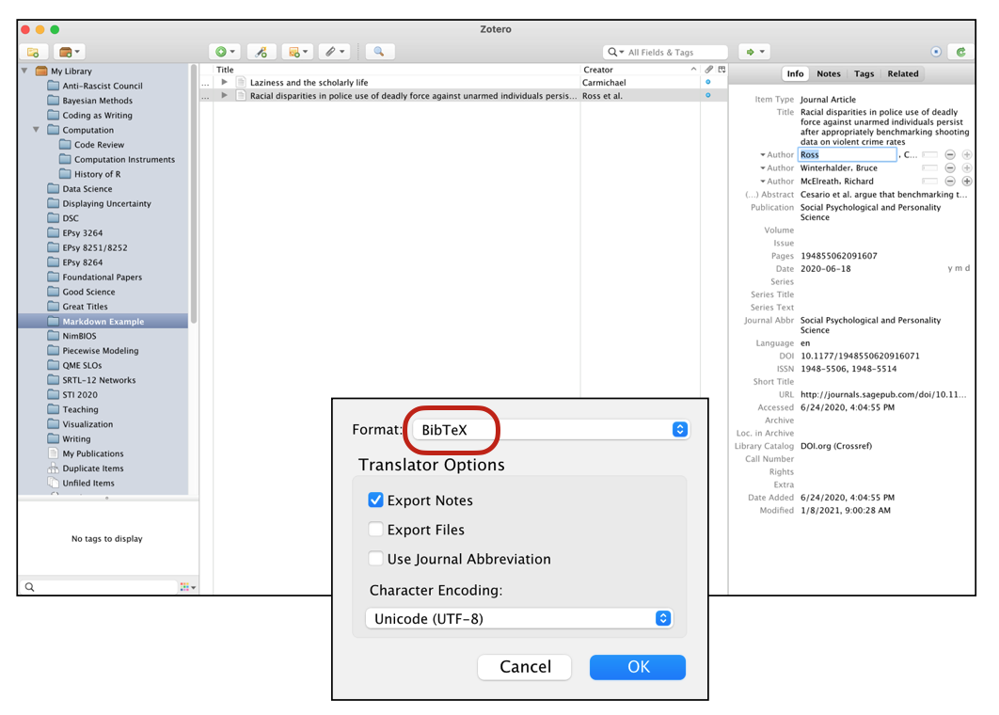
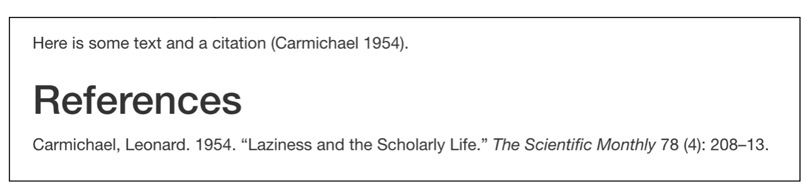
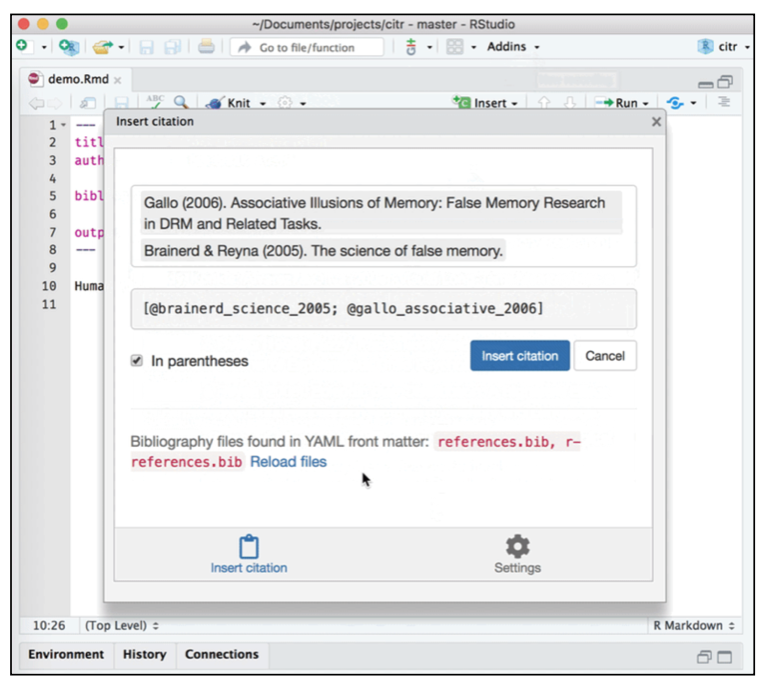

More Quarto
This document contains some additional instruction for EPsy 8252. Note that I might add to this as students hit me with questions over the course of the semester.
Citations
To add citations, we need to:
- Create a BibTeX (.bib) file that holds the metadata for our references.
- Save the BibTeX file to our project directory (typically in the
assetsdirectory) - Include
bibliography: "location/bibliography-name.bib"in the YAML of our QMD document
Creating .bib Files Using Zotero
Most reference managers (e.g., Papers, Zotero, Mendelay) can produce BibTex files. Here I will illustrate the process using Zotero.
- Create a
New Collection. - Drag the references you want in your BibTeX database into this collection. For today, drag the Carmichael (1954) and Ross, Winterhalder, & McElreath (2020) references into this collection.
- Right-click the collection and select
Export Collection. - In the pop-up window, change the format of the exported collection to
BibTex. - Click
OK.
Name the BibTex file (here I named it my-bibliography.bib) and save it in the assets folder.

When you call the BibTex file in the bibliography: key of the YAML in your QMD document, you will need to give the location of the BibTex (relative to the QMD document) and the name you just gave it. For example if you are calling a bibliography in the quarto document assignment-01.qmd that has the following directory/folder structure:
assignment-01
├── README
├── assets
└── my-bibliography.bib
├── assignment-01.qmd
├── assignment-01.Rproj
├── data
└── fertility.csv
├── figs
└── scriptsIncluding the BIB File in your YAML
You would then include the following in your Quarto document’s YAML:
---
title: "Assignment 1"
subtitle: "Introduction to Quarto"
author: "Your Group's Names"
date: "January XX, 2023"
format: html
editor: visual
bibliography: "assets/my-bibliography.bib"
---BibTex Files
BibTeX files are essentially databases that store bibliographic information in a plain-text (style-independent) file. The database includes a set of references and their metadata. Here is the raw text inside an example BibTex file that includes two articles written by Carmichael (1954) and Ross et al. (2020).
@article{carmichael_1954,
title = {Laziness and the Scholarly Life},
volume = {78},
number = {4},
journal = {The Scientific Monthly},
author = {Carmichael, Leonard},
year = {1954},
pages = {208--213}
}
@article{ross_2020,
title = {Racial disparities in police use of deadly force against unarmed individuals persist after appropriately benchmarking shooting data on violent crime rates},
issn = {1948-5506, 1948-5514},
url = {http://journals.sagepub.com/doi/10.1177/1948550620916071},
doi = {10.1177/1948550620916071},
language = {en},
urldate = {2020-06-24},
journal = {Social Psychological and Personality Science},
author = {Ross, Cody T. and Winterhalder, Bruce and McElreath, Richard},
month = jun,
year = {2020},
pages = {194855062091607}
}The citation identifiers in this example are carmichael_1954 and ross_2020. These identifiers are the first bit of text after the initial curly brace in the reference. This is how we will refer to the citations in our QMD document. (Typically these are auto-generated from our reference manager.) To determine the citiation identifiers, you can open your BibTeX file in RStudio. (Do this by using Open File... within RStudio; double-clicking on the BibTeX file will likely open it in a different application.)
Including Citations in Your Quarto Document
Citations go inside square brackets and are separated by semicolons. Each citation must have a key, composed of @citation_identifier from the database (no spaces between them). For example to cite the Carmichael article:
Here is some text and a citation [@carmichael_1954].This will create a citation where you included it in the text and also add the reference at the end of the document. If you want a section header for your references, include a level-1 heading called “References” at the end of your document.
The rendered document now includes a citation where you added this is the QMD document. The associated reference is also included at the end of the document.

Citations may also include. additional text before and after the citation. In this example we have prefixed the citation with the word “see” and added a page number after the citation. The citation identifier and the text following the citation identifier are separated by a comma.
Here is some text and a citation [see @carmichael_1954, p. 208].The output of this is:
Here is some text and a citation (see Carmichael, 1954, p. 208).
You can also include multiple citations. To do this we include the different citation identifiers separated by a semicolon.
Here are multiple citations [@ross_2020; @carmichael_1954].The output of this is:
Here are multiple citations (Carmichael, 1954; Ross et al., 2020).
We can also change the format of the citation. For example, here we use a format common to starting a sentence with a citation. To do that we omit the square brackets.
@carmichael_1954 suggests something is true.The output of this is:
Carmichael (1954) suggests something is true.
You can learn more on the Citations and Footnotes Help Page in the Quarto documentation.
Use APA Formatted Citations and References
By default, citations and references are formatted using the Chicago style. To use another style, you will need to:
- Download the appropriate citation style language (CSL) file. (Find many at https://zotero.org/styles)
- Place the CSL file in the
assetsfolder of your project’s directory. - Specify the name of the CSL style file in the
csl:key in the QMD file’s YAML.
For example, say you have downloaded and saved the apa-single-spaced.csl file and placed it in the assets directory, giving the following directory/folder structure:
assignment-01
├── README
├── assets
├── apa-single-spaced.csl
└── my-bibliography.bib
├── assignment-01.qmd
├── assignment-01.Rproj
├── data
└── fertility.csv
├── figs
└── scriptsYou would include the following in your YAML.
If, for example, you had named the BIB file my-bibliography.bib and had put this file in the assets directory, your YAML would be:
---
title: "Assignment 1"
subtitle: "Introduction to Quarto"
author: "Your Group's Names"
date: "January XX, 2023"
format: html
editor: visual
bibliography: "assets/my-bibliography.bib"
csl: "assets/apa-single-spaced.csl"
---Use of the APA CSL file not only formats the references according to APA format, but it also fixed the order of the citations in the text itself! (Even though we included the Ross citation identifier prior to the Carmichael citation identifier in the multiple references example, the APA CSL file put them in the text alphabetically!)
Citation Extras
One R package that is extremely useful, especially if you are using the visual editor in RStudio for writing QMD documents, is {citr}. This package provides functionality and an RStudio Add-In to search a BibTeX-file to create and insert formatted Markdown citations into a QMD document.

The {citr} package is only available via GitHub, so you will need to install it using{remotes}or{devtools}. (See the Computational Toolkit book for a reminder on how to do this.) The directions for installing{citr}` are also on the citr webpage along with instructions for using the package.
Auto-Populating the Date in Your YAML
We can auto-populate the date: key in our document’s YAML by including an inline code chunk that calls the Sys.Date() function. This function returns your computer’s idea of the current date in the YYYY-MM-DD format (ISO 8601 standard). If you want to be hyper specific, you can use Sys.time() to return the date and time in the format: YYYY-MM-DD HH-MM:SS Time Zone.
# Return date
Sys.Date()[1] "2023-01-18"# Retuen time
Sys.time()[1] "2023-01-18 07:46:50 CST"Here is an example of the YAML in the date: key to use Sys.Date() to auto-populate the date.
---
title: "Assignment 1"
subtitle: "Introduction to Quarto"
author: "Your Group's Names"
date: " `r Sys.Date()`"
format: html
editor: visual
bibliography: "assets/my-bibliography.bib"
---Note that the inline chunk is embedded in quotation marks. We can custom format each of these using the format() function. This function takes the Sys.Date() function as its first argument, and then a character string of formatting rules. Here I format the date to have the full month name, day of the month, and year (with century): e.g., January 12, 2023.
---
title: "Assignment 1"
subtitle: "Introduction to Quarto"
author: "Your Group's Names"
date: " `r format(Sys.Date(), '%B %d %Y')`"
format: html
editor: visual
bibliography: "assets/my-bibliography.bib"
---You can see all the formatting options by calling help(strptime).
Learn More
Yihui Xie, the creater of the RMarkdown package (which does a lot of the work in converting your QMD file to an HTML/PDF file, gave a nice trechnical talk to the American Statistical Association’s Section on Statistical Computing that explain what actually happens behind the scenes when you click the Knit or Render button in RStudio to render a RMD or QMD document.